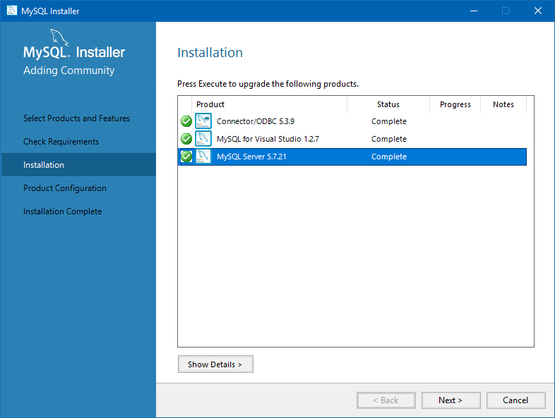
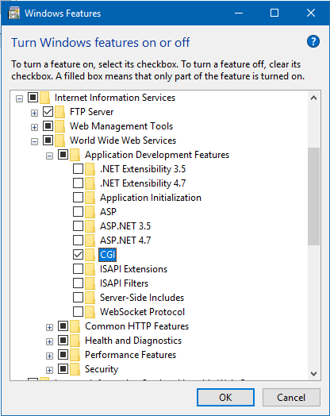
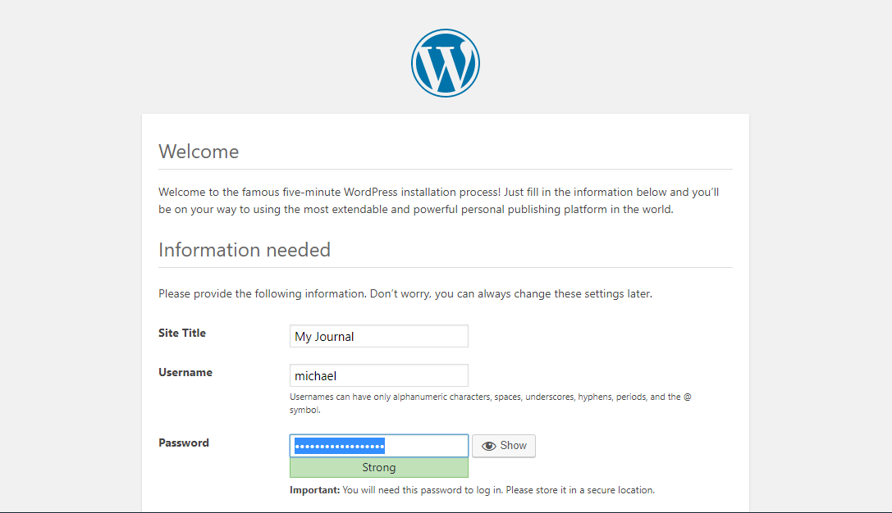

Installing the Dependencies
WordPress requires a few things to run:
- A Web server, such as Apache or IIS
- PHP
- MySQL Server (several alternative DB engines can be used, though)
IIS Express might already be installed on your machine if you have Visual Studio with Web development features. There wasn't much required in terms of configuring the server itself, but to see whether the IIS Welcome page appears in the browser at http://localhost.
WordPress can use several different database engines, but I've chosen
MySQL in particular because it plays well with .NET, Python and Java. I recommend installing and configuring MySQL prior to downloading WordPress itself, and getting the release that includes MySQL and ODBC.
>
When configuring the database server, I selected the 'Development Machine' option, with the port number '3308' (the default was already in use). The server is also configured here as a Windows service that launches during startup. Also, very important: Do not forget the MySQL root password!
When using the Web Platform Installer, we can install WordPress and PHP together. Install the latest stable version of PHP, which in his case appears to be PHP 7.2.2.
During the WordPress installation I encountered a configuration error, something about access control list incompatibility, but that can be ignored if the WordPress are still present in the
inetpub directory. If the WordPress files are accidentally downloaded to the
Documents directory instead, and WebMatrix launches, simply copy/move the
wordpress directory to
inetpub.
If there's a 502 error when trying to access WordPress, launch the Windows Features utility and check that CGI is enabled under
Internet Information Services /
Application Development Features.

Now it's a matter of navigating a browser to http://localhost/wordpress. This will, if PHP is working correctly, display the initial configuration page.

Once past this stage, there should now be an almost fully working dashboard. There are three highly customisable themes included with this release.
Fixing the Content Upload Error and Reactivating the Links Manager
You might get the following error message when trying to upload an image to the Media Library:
Is the parent directory writeable by the server? Give the following users permissions to write/modify the
wp-content directory:
And insert the following line in
wp-config.php:
define('UPLOADS', 'wp-content/uploads');
Before the line:
require_once(ABSPATH, 'wp-settings.php');
You might need to restart the IIS server and reload the browser page for the media upload to work.
Another feature that's disabled by default is the Links Manager. To reactivate this, add the following line in the current WordPress theme's
functions.php file:
add_filter( 'pre_option_link_manager_enabled', '__return_true' );